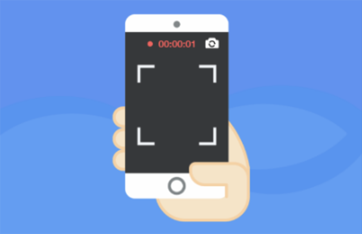

<ion-view view-title="实名认证" class="nav-title">
	<ion-nav-bar>
		<ion-nav-buttons side="left">
			<button class="button button-icon" ng-click="goback()">
				<i class="ion-ios-arrow-left nav-title" style="font-size: 30px;"></i>
			</button>
		</ion-nav-buttons>
	</ion-nav-bar>

	<ion-content style="background-color: white;">
		
		<div style="width: 100%;display: flex;flex-direction: column;align-items: center;justify-content: center;margin-top: 100px;">
			<p style="color: #108EE9;font-size: 45px;letter-spacing: 15px;">{{fourNum}}</p>
			<div style="position: relative;margin-top: 100px;width: 90%;">
				<button class="button button-block button-positive">下一步</button>
				<input type="file" name="" id="file_video" accept="video/*" capture="camcorder" style="line-height: 57px;opacity: 0;position: absolute;top: 5px;left: 0;width: 100%;">
			</div>
		</div>
	</ion-content>
</ion-view>